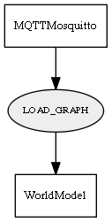

Global overview
All modules
All variables
All commands
Mission files
Pipelines
Variable: LOAD_GRAPH
Variable info:
Variable name
Short description
Who publishes it?
Who subscribes to it?
LOAD_GRAPH
Variable to request loading the topological graph from file (file)
MQTTMosquitto
WorldModel
Variable graph:

Detailed description:
Variable to request loading the topological graph from file (file)
Page generated by
Mooxygen 1.1.0
at Thu Jan 22 11:30:21 2015